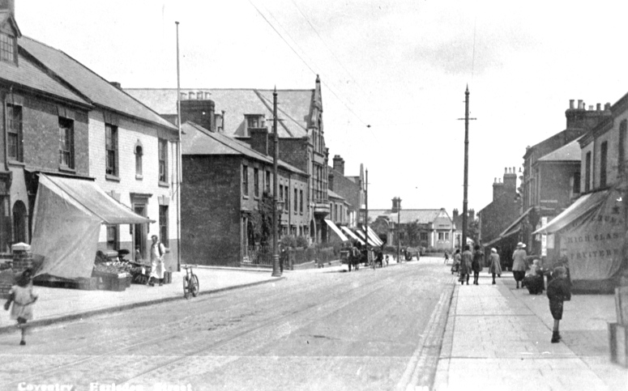
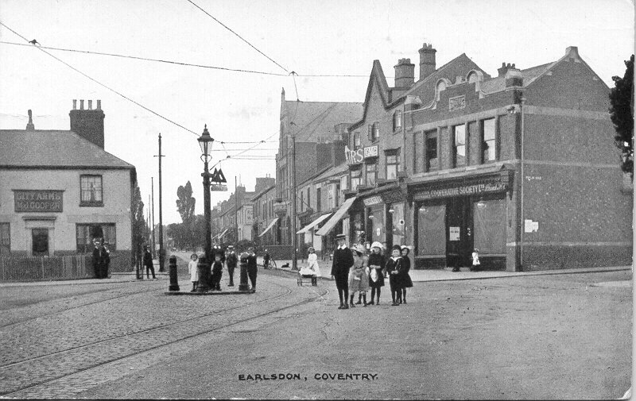
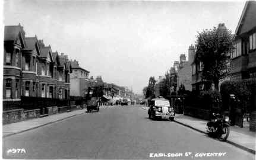
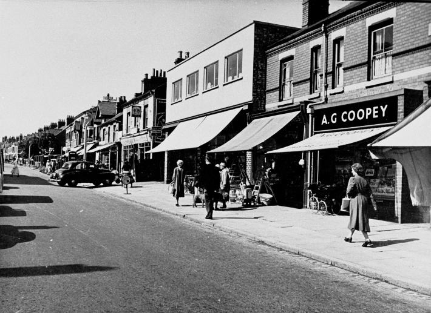

Earlsdon Street Earlsdon began as a residential street in Coventry's new watchmaking 'village'. However, as the watch trade slumped and the watchmakers found it harder to find work many opened shops in the front of their premises. Thus Earlsdon Street was slowly turned into the shopping street we know today. In the picture above Moor Street is in the middle distance on the right but not as many shops as we see today. Earlsdon Street has not yet become a long range of shops, most being concentrated at the southern end. The rest is still private housing as it had been for most of the previous half century. The pillars holding the tramlines dominate the street scene.  At first glance this view shows little change from today. The Co-operative Society grocer is on the corner of Poplar Road, built in 1907, now Bedlam. A. Keight’s shoe factory is on the left of the Empire Meat Co and H. Moore baker being the other side. The buildings between these shops and the Earlsdon Working Men’s’ Club were all demolished in the late 1980s to make way for a modern Co-op store, rather out of keeping with the rest of this street scene. To the left of this scene is the original City Arms. It continues to be known by some as Ma Cooper’s despite the original pub being replaced with its present building in 1931. Mrs Mary Jane Cooper was still in charge when this photograph was taken, her occupancy lasted from 1897 to 1921, when she died aged 84. Her time at the pub started with the opening of Albany Road and concluded at the time that most of the expansion of Earlsdon was complete. It is perhaps appropriate that hers is the name most famously associated with Earlsdon.
This view has been taken looking towards Albany Road with Providence Street to the right. Clearly, parked cars were not so much a problem along this road then as it is now, though given the cumbersome and slow nature of glass plate photography in those days the photographer must be very sure of himself with the tram bearing down on him. As is often the case when school is out the photographer has attracted the attention of children, though they like most children do not seem to be concerned about the danger of traffic. The tram was a short way from its terminus in Rochester Road at the junction with Beechwood Avenue. It has Jordan Well on its indicator board so it has come via Smithford Street.  Little has changed in this photograph of Earlsdon Street since the early Edwardian postcard photographers captured the views above. The iron railings have not yet been cut down for the War that is imminent, though the trees and hedges have now grown. However, the motor vehicles are what really give the game away and the modern extension to the frontage of the shops nearest the camera is another indication of this being a period later in the twentieth century.  |